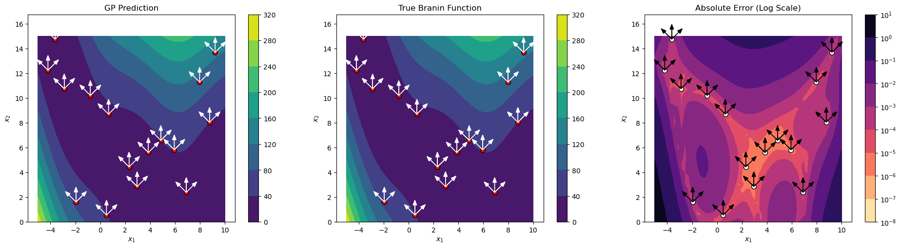
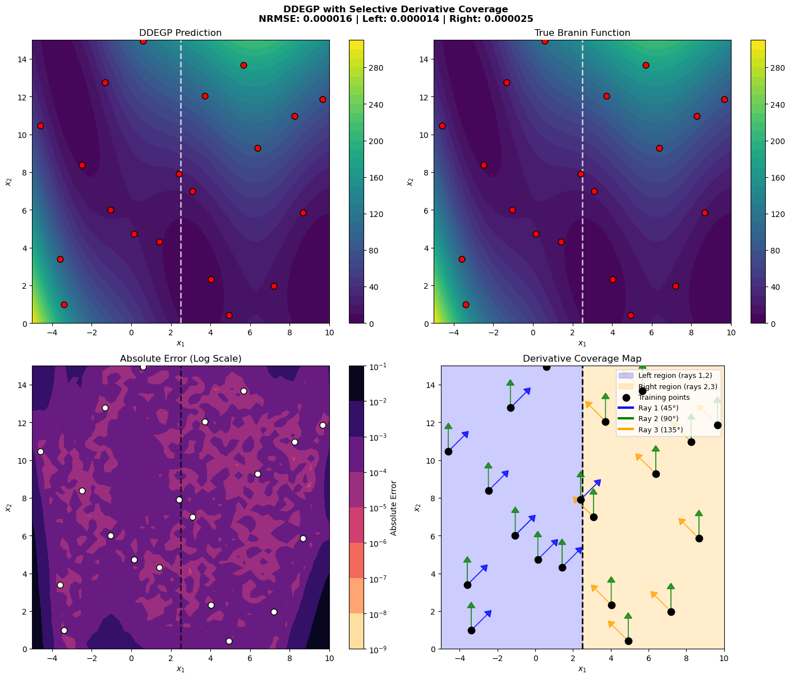
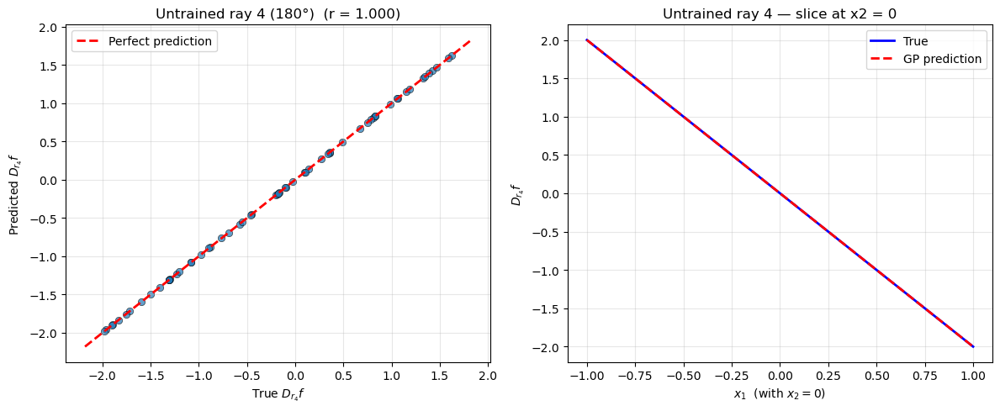

Directional Derivative-Enhanced Gaussian Process (DDEGP)#
Overview#
The Directional Derivative-Enhanced Gaussian Process (DDEGP) extends the standard DEGP framework by incorporating derivative information along specified directional rays rather than coordinate axes. This enables the model to:
Capture local behavior along arbitrary directions in the input space
Reduce the number of required derivative evaluations in high-dimensional problems
Focus derivative information along problem-specific directions of interest
Provide more flexible derivative observations compared to axis-aligned derivatives
This tutorial demonstrates DDEGP on the 2D Branin function using a global basis of directional derivatives applied at all training points. The directional approach is particularly useful when:
Coordinate-aligned derivatives are expensive or unavailable
The problem has known directional characteristics
Reducing the total number of derivative evaluations is critical
Working with high-dimensional spaces where full derivative information is impractical
—
Example 1: Global Directional GP on the Branin Function#
Overview#
This example demonstrates a Directional-Derivative Enhanced Gaussian Process (DDEGP) applied to the 2D Branin function. We use a global set of directional rays that are applied at all training points, allowing the GP to learn local behavior along these specific directions.
Key concepts covered:
Using a global basis of directional derivatives for all training points
Constructing
derivative_locationsto specify where each derivative existsLatin Hypercube Sampling (LHS) for efficient training data generation
Training and evaluating the
ddegpmodelVisualizing predictions with directional rays overlaid on the results
—
Step 1: Import required packages#
import numpy as np
import sympy as sp
from jetgp.full_ddegp.ddegp import ddegp
import jetgp.utils as utils
from scipy.stats import qmc
from matplotlib import pyplot as plt
from matplotlib.colors import LogNorm
Explanation:
We import necessary modules for numerical operations, symbolic differentiation (sympy), the DDEGP model, Latin Hypercube Sampling (qmc), and visualization tools.
—
Step 2: Set configuration parameters#
n_order = 1
n_bases = 2
num_training_pts = 16
domain_bounds = ((-5.0, 10.0), (0.0, 15.0))
test_grid_resolution = 50
# Global set of directional rays (45°, 90°, 135°)
rays = np.array([
[np.cos(np.pi/4), np.cos(np.pi/2), np.cos(3*np.pi/4)],
[np.sin(np.pi/4), np.sin(np.pi/2), np.sin(3*np.pi/4)]
])
normalize_data = True
kernel = "SE"
kernel_type = "anisotropic"
random_seed = 1
np.random.seed(random_seed)
print("Configuration complete!")
print(f"Number of training points: {num_training_pts}")
print(f"Number of directional rays: {rays.shape[1]}")
print(f"Ray directions:")
for i in range(rays.shape[1]):
angle_deg = np.arctan2(rays[1, i], rays[0, i]) * 180 / np.pi
print(f" Ray {i+1}: [{rays[0, i]:+.4f}, {rays[1, i]:+.4f}] (angle: {angle_deg:.1f}°)")
Configuration complete!
Number of training points: 16
Number of directional rays: 3
Ray directions:
Ray 1: [+0.7071, +0.7071] (angle: 45.0°)
Ray 2: [+0.0000, +1.0000] (angle: 90.0°)
Ray 3: [-0.7071, +0.7071] (angle: 135.0°)
Explanation: We configure the experiment parameters:
n_order=1: First-order directional derivativesn_bases=2: Two-dimensional input spacerays: Three directional vectors at 45°, 90°, and 135° angleskernel="SE": Squared Exponential kernel for smooth interpolationThe directional rays define the directions along which derivatives will be computed at each training point
—
Step 3: Define the Branin function#
def branin_function(X, alg=np):
"""2D Branin function - a common benchmark for optimization."""
x1, x2 = X[:, 0], X[:, 1]
a, b, c, r, s, t = 1.0, 5.1/(4.0*np.pi**2), 5.0/np.pi, 6.0, 10.0, 1.0/(8.0*np.pi)
return a * (x2 - b*x1**2 + c*x1 - r)**2 + s*(1 - t)*alg.cos(x1) + s
# Define symbolic version for derivatives
x1_sym, x2_sym = sp.symbols('x1 x2')
a, b, c, r, s, t = 1.0, 5.1/(4.0*sp.pi**2), 5.0/sp.pi, 6.0, 10.0, 1.0/(8.0*sp.pi)
f_sym = a * (x2_sym - b*x1_sym**2 + c*x1_sym - r)**2 + s*(1 - t)*sp.cos(x1_sym) + s
# Compute gradients symbolically
grad_x1 = sp.diff(f_sym, x1_sym)
grad_x2 = sp.diff(f_sym, x2_sym)
# Convert to NumPy functions
f_func = sp.lambdify([x1_sym, x2_sym], f_sym, 'numpy')
grad_x1_func = sp.lambdify([x1_sym, x2_sym], grad_x1, 'numpy')
grad_x2_func = sp.lambdify([x1_sym, x2_sym], grad_x2, 'numpy')
print("Branin function and symbolic derivatives defined!")
Branin function and symbolic derivatives defined!
Explanation:
The Branin function is a standard 2D test function with three global minima. We define both a numerical version and a symbolic version using SymPy. The symbolic version allows us to compute exact partial derivatives \(\frac{\partial f}{\partial x_1}\) and \(\frac{\partial f}{\partial x_2}\), which are then converted to fast NumPy-compatible functions using lambdify.
—
Step 4: Generate training data with directional derivatives#
# Latin Hypercube Sampling for training points
sampler = qmc.LatinHypercube(d=n_bases, seed=random_seed)
unit_samples = sampler.random(n=num_training_pts)
X_train = qmc.scale(unit_samples, [b[0] for b in domain_bounds], [b[1] for b in domain_bounds])
# Compute function values
y_func = f_func(X_train[:, 0], X_train[:, 1]).reshape(-1, 1)
# Compute coordinate-aligned gradients
grad_x1_vals = grad_x1_func(X_train[:, 0], X_train[:, 1]).reshape(-1, 1)
grad_x2_vals = grad_x2_func(X_train[:, 0], X_train[:, 1]).reshape(-1, 1)
# Compute directional derivatives using the chain rule
# For each ray: d_ray = grad_x1 * ray[0] + grad_x2 * ray[1]
directional_derivs = []
for i in range(rays.shape[1]):
ray_direction = rays[:, i]
dir_deriv = (grad_x1_vals * ray_direction[0] +
grad_x2_vals * ray_direction[1])
directional_derivs.append(dir_deriv)
# Package training data
y_train_list = [y_func] + directional_derivs
der_indices = [[[[1, 1]], [[2, 1]], [[3, 1]]]]
# Build derivative_locations: all rays at all points
derivative_locations = []
for i in range(len(der_indices)):
for j in range(len(der_indices[i])):
derivative_locations.append([k for k in range(len(X_train))])
print(f"Training data generated!")
print(f"X_train shape: {X_train.shape}")
print(f"Function values shape: {y_func.shape}")
print(f"Number of directional derivative arrays: {len(directional_derivs)}")
print(f"derivative_locations: {len(derivative_locations)} entries, each with {len(derivative_locations[0])} points")
Training data generated!
X_train shape: (16, 2)
Function values shape: (16, 1)
Number of directional derivative arrays: 3
derivative_locations: 3 entries, each with 16 points
Explanation: This step performs several key operations:
Latin Hypercube Sampling: Efficiently distributes training points across the domain
Function evaluation: Computes function values at all training points
Gradient computation: Evaluates partial derivatives \(\frac{\partial f}{\partial x_1}\) and \(\frac{\partial f}{\partial x_2}\) using the symbolic functions
Directional derivatives: Uses the chain rule to compute derivatives along each ray direction:
\[\frac{\partial f}{\partial \mathbf{d}} = \frac{\partial f}{\partial x_1} d_1 + \frac{\partial f}{\partial x_2} d_2\]where \(\mathbf{d} = [d_1, d_2]\) is the ray direction vector
derivative_locations: Specifies that all directional derivatives are available at all training points. The structure is a list with one entry per derivative in
der_indices, where each entry contains the indices of points that have that derivative.
The result is training data with function values and three directional derivatives at each of the 16 training points, computed analytically using SymPy’s symbolic differentiation.
—
Step 5: Initialize and train the DDEGP model#
# Initialize the DDEGP model
gp_model = ddegp(
X_train,
y_train_list,
n_order=n_order,
der_indices=der_indices,
derivative_locations=derivative_locations,
rays=rays,
normalize=normalize_data,
kernel=kernel,
kernel_type=kernel_type
)
print("DDEGP model initialized!")
print("Optimizing hyperparameters...")
# Optimize hyperparameters
params = gp_model.optimize_hyperparameters(
optimizer='pso',
pop_size=200,
n_generations=15,
local_opt_every=None,
debug=False
)
print("Optimization complete!")
print(f"Optimized parameters: {params}")
DDEGP model initialized!
Optimizing hyperparameters...
Stopping: maximum iterations reached --> 15
Optimization complete!
Optimized parameters: [-0.02596297 -0.89539419 1.35052575 -6.9867352 ]
Explanation: The DDEGP model is initialized with:
Training locations and derivative data
derivative_locations: Specifies which training points have each directional derivativeDirectional rays defining the derivative directions
Squared Exponential kernel for smooth modeling
Hyperparameters are optimized using Particle Swarm Optimization (PSO) with a population of 200 for 15 generations to find optimal kernel parameters.
—
Step 6: Evaluate model on a test grid#
# Create dense test grid
x_lin = np.linspace(domain_bounds[0][0], domain_bounds[0][1], test_grid_resolution)
y_lin = np.linspace(domain_bounds[1][0], domain_bounds[1][1], test_grid_resolution)
X1_grid, X2_grid = np.meshgrid(x_lin, y_lin)
X_test = np.column_stack([X1_grid.ravel(), X2_grid.ravel()])
print(f"Test grid: {test_grid_resolution}×{test_grid_resolution} = {len(X_test)} points")
# Predict on test grid
y_pred_full = gp_model.predict(X_test, params, calc_cov=False, return_deriv=False)
y_pred = y_pred_full[0, :] # Row 0: function values
# Compute ground truth and error
y_true = branin_function(X_test, alg=np)
nrmse = utils.nrmse(y_true, y_pred)
abs_error = np.abs(y_true - y_pred)
print(f"\nModel Performance:")
print(f" NRMSE: {nrmse:.6f}")
print(f" Max absolute error: {abs_error.max():.6f}")
print(f" Mean absolute error: {abs_error.mean():.6f}")
Test grid: 50×50 = 2500 points
Model Performance:
NRMSE: 0.000910
Max absolute error: 4.106575
Mean absolute error: 0.064468
Explanation: The model is evaluated on a 50×50 grid covering the entire domain.
Important: Predictions now return a 2D array with shape [num_derivs + 1, num_points]:
Row 0: Function values
Row 1: First directional derivative (Ray 1)
Row 2: Second directional derivative (Ray 2)
etc.
When return_deriv=False, only function values are computed, but we still extract using y_pred_full[0, :] for consistency with the output format.
The Normalized Root Mean Square Error (NRMSE) quantifies prediction accuracy across the test set.
—
Step 7: Verify interpolation of training data#
# ------------------------------------------------------------
# Verify function value interpolation at all training points
# ------------------------------------------------------------
y_func_values = y_train_list[0] # Function values
# Predict at training points (function values only)
y_pred_train = gp_model.predict(X_train, params, calc_cov=False, return_deriv=False)
print("Function value interpolation errors:")
print("=" * 70)
for i in range(num_training_pts):
error_abs = abs(y_pred_train[0, i] - y_func_values[i, 0])
error_rel = error_abs / abs(y_func_values[i, 0]) if y_func_values[i, 0] != 0 else error_abs
print(f"Point {i} (x1={X_train[i, 0]:.4f}, x2={X_train[i, 1]:.4f}): "
f"Abs Error = {error_abs:.2e}, Rel Error = {error_rel:.2e}")
max_func_error = np.max(np.abs(y_pred_train[0, :] - y_func_values.flatten()))
print(f"\nMaximum absolute function value error: {max_func_error:.2e}")
Function value interpolation errors:
======================================================================
Point 0 (x1=2.9577, x2=2.8589): Abs Error = 6.09e-07, Rel Error = 8.12e-07
Point 1 (x1=-4.1976, x2=12.2356): Abs Error = 2.43e-07, Rel Error = 1.91e-08
Point 2 (x1=8.7702, x2=8.0406): Abs Error = 3.26e-07, Rel Error = 8.32e-09
Point 3 (x1=9.2240, x2=13.6789): Abs Error = 2.93e-08, Rel Error = 2.26e-10
Point 4 (x1=3.8598, x2=5.5992): Abs Error = 6.52e-07, Rel Error = 3.76e-08
Point 5 (x1=-2.8939, x2=10.7455): Abs Error = 7.55e-07, Rel Error = 4.78e-07
Point 6 (x1=5.9409, x2=5.8233): Abs Error = 1.43e-06, Rel Error = 3.45e-08
Point 7 (x1=6.9033, x2=2.3873): Abs Error = 9.35e-07, Rel Error = 4.85e-08
Point 8 (x1=0.4993, x2=0.5596): Abs Error = 1.12e-06, Rel Error = 2.79e-08
Point 9 (x1=2.3093, x2=4.4416): Abs Error = 5.30e-07, Rel Error = 9.51e-08
Point 10 (x1=-1.9535, x2=1.6121): Abs Error = 7.42e-07, Rel Error = 1.06e-08
Point 11 (x1=4.8576, x2=6.5806): Abs Error = 3.32e-07, Rel Error = 8.50e-09
Point 12 (x1=0.6609, x2=8.6955): Abs Error = 1.87e-06, Rel Error = 6.00e-08
Point 13 (x1=-3.6324, x2=14.7404): Abs Error = 7.41e-08, Rel Error = 2.38e-08
Point 14 (x1=7.9744, x2=11.2782): Abs Error = 1.53e-06, Rel Error = 1.47e-08
Point 15 (x1=-0.7963, x2=10.2039): Abs Error = 1.69e-06, Rel Error = 6.80e-08
Maximum absolute function value error: 1.87e-06
# ------------------------------------------------------------
# Verify directional derivative interpolation
# ------------------------------------------------------------
print("=" * 70)
print("Directional derivative interpolation verification:")
print("=" * 70)
print(f"Number of directional rays: {rays.shape[1]}")
print(f"Ray directions:")
for i in range(rays.shape[1]):
angle_deg = np.arctan2(rays[1, i], rays[0, i]) * 180 / np.pi
print(f" Ray {i+1}: [{rays[0, i]:+.4f}, {rays[1, i]:+.4f}] (angle: {angle_deg:.1f}°)")
print("=" * 70)
# Predict with derivatives - returns [num_derivs + 1, num_points] array
y_pred_with_derivs = gp_model.predict(X_train, params, calc_cov=False, return_deriv=True)
print(f"\nPrediction with derivatives shape: {y_pred_with_derivs.shape}")
print(f"Expected: [{rays.shape[1] + 1} rows, {num_training_pts} columns]")
print(f" Row 0: function values")
print(f" Row 1: Ray 1 derivatives (45°)")
print(f" Row 2: Ray 2 derivatives (90°)")
print(f" Row 3: Ray 3 derivatives (135°)")
# Extract predicted values using row indexing
# Row 0: function values, Row 1-3: directional derivatives for each ray
pred_func_vals = y_pred_with_derivs[0, :]
pred_deriv_ray1 = y_pred_with_derivs[1, :]
pred_deriv_ray2 = y_pred_with_derivs[2, :]
pred_deriv_ray3 = y_pred_with_derivs[3, :]
# Extract analytic derivatives from training data
analytic_deriv_ray1 = y_train_list[1]
analytic_deriv_ray2 = y_train_list[2]
analytic_deriv_ray3 = y_train_list[3]
# Verify each ray's directional derivatives
pred_derivs = [pred_deriv_ray1, pred_deriv_ray2, pred_deriv_ray3]
analytic_derivs = [analytic_deriv_ray1, analytic_deriv_ray2, analytic_deriv_ray3]
for ray_idx in range(rays.shape[1]):
print(f"\n{'-'*70}")
print(f"Ray {ray_idx + 1} - Direction: [{rays[0, ray_idx]:+.4f}, {rays[1, ray_idx]:+.4f}]")
print(f"{'-'*70}")
pred_deriv = pred_derivs[ray_idx]
analytic_deriv = analytic_derivs[ray_idx].flatten()
for i in range(num_training_pts):
error_abs = abs(pred_deriv[i] - analytic_deriv[i])
error_rel = error_abs / abs(analytic_deriv[i]) if analytic_deriv[i] != 0 else error_abs
print(f"Point {i} (x1={X_train[i, 0]:.4f}, x2={X_train[i, 1]:.4f}):")
print(f" Analytic: {analytic_deriv[i]:+.6f}, Predicted: {pred_deriv[i]:+.6f}")
print(f" Abs Error: {error_abs:.2e}, Rel Error: {error_rel:.2e}")
max_deriv_error = np.max(np.abs(pred_deriv.flatten() - analytic_deriv.flatten()))
print(f"\nMaximum absolute error for Ray {ray_idx + 1}: {max_deriv_error:.2e}")
======================================================================
Directional derivative interpolation verification:
======================================================================
Number of directional rays: 3
Ray directions:
Ray 1: [+0.7071, +0.7071] (angle: 45.0°)
Ray 2: [+0.0000, +1.0000] (angle: 90.0°)
Ray 3: [-0.7071, +0.7071] (angle: 135.0°)
======================================================================
Note: derivs_to_predict is None. Predictions will include all derivatives used in training: [[[1, 1]], [[2, 1]], [[3, 1]]]
Prediction with derivatives shape: (4, 16)
Expected: [4 rows, 16 columns]
Row 0: function values
Row 1: Ray 1 derivatives (45°)
Row 2: Ray 2 derivatives (90°)
Row 3: Ray 3 derivatives (135°)
----------------------------------------------------------------------
Ray 1 - Direction: [+0.7071, +0.7071]
----------------------------------------------------------------------
Point 0 (x1=2.9577, x2=2.8589):
Analytic: -0.114669, Predicted: -0.114669
Abs Error: 2.63e-08, Rel Error: 2.29e-07
Point 1 (x1=-4.1976, x2=12.2356):
Analytic: -20.057824, Predicted: -20.057824
Abs Error: 9.80e-08, Rel Error: 4.88e-09
Point 2 (x1=8.7702, x2=8.0406):
Analytic: -1.342300, Predicted: -1.342300
Abs Error: 5.62e-09, Rel Error: 4.18e-09
Point 3 (x1=9.2240, x2=13.6789):
Analytic: +1.995643, Predicted: +1.995643
Abs Error: 1.08e-07, Rel Error: 5.40e-08
Point 4 (x1=3.8598, x2=5.5992):
Analytic: +13.075170, Predicted: +13.075170
Abs Error: 6.10e-08, Rel Error: 4.67e-09
Point 5 (x1=-2.8939, x2=10.7455):
Analytic: -2.785022, Predicted: -2.785021
Abs Error: 1.12e-07, Rel Error: 4.03e-08
Point 6 (x1=5.9409, x2=5.8233):
Analytic: +9.330693, Predicted: +9.330693
Abs Error: 1.54e-07, Rel Error: 1.65e-08
Point 7 (x1=6.9033, x2=2.3873):
Analytic: -2.553795, Predicted: -2.553795
Abs Error: 2.00e-08, Rel Error: 7.82e-09
Point 8 (x1=0.4993, x2=0.5596):
Analytic: -19.542278, Predicted: -19.542278
Abs Error: 8.38e-08, Rel Error: 4.29e-09
Point 9 (x1=2.3093, x2=4.4416):
Analytic: -0.992354, Predicted: -0.992354
Abs Error: 7.23e-08, Rel Error: 7.29e-08
Point 10 (x1=-1.9535, x2=1.6121):
Analytic: -28.687364, Predicted: -28.687364
Abs Error: 5.25e-08, Rel Error: 1.83e-09
Point 11 (x1=4.8576, x2=6.5806):
Analytic: +16.666480, Predicted: +16.666480
Abs Error: 6.19e-09, Rel Error: 3.71e-10
Point 12 (x1=0.6609, x2=8.6955):
Analytic: +8.468193, Predicted: +8.468194
Abs Error: 9.11e-08, Rel Error: 1.08e-08
Point 13 (x1=-3.6324, x2=14.7404):
Analytic: +3.063847, Predicted: +3.063848
Abs Error: 1.99e-07, Rel Error: 6.48e-08
Point 14 (x1=7.9744, x2=11.2782):
Analytic: +0.587794, Predicted: +0.587795
Abs Error: 1.54e-07, Rel Error: 2.62e-07
Point 15 (x1=-0.7963, x2=10.2039):
Analytic: +16.145825, Predicted: +16.145825
Abs Error: 3.06e-08, Rel Error: 1.89e-09
Maximum absolute error for Ray 1: 1.99e-07
----------------------------------------------------------------------
Ray 2 - Direction: [+0.0000, +1.0000]
----------------------------------------------------------------------
Point 0 (x1=2.9577, x2=2.8589):
Analytic: +0.872268, Predicted: +0.872269
Abs Error: 7.42e-08, Rel Error: 8.50e-08
Point 1 (x1=-4.1976, x2=12.2356):
Analytic: -5.442781, Predicted: -5.442781
Abs Error: 2.16e-08, Rel Error: 3.97e-09
Point 2 (x1=8.7702, x2=8.0406):
Analytic: +12.124916, Predicted: +12.124916
Abs Error: 8.17e-08, Rel Error: 6.74e-09
Point 3 (x1=9.2240, x2=13.6789):
Analytic: +22.736012, Predicted: +22.736012
Abs Error: 8.01e-08, Rel Error: 3.52e-09
Point 4 (x1=3.8598, x2=5.5992):
Analytic: +7.635203, Predicted: +7.635203
Abs Error: 1.07e-07, Rel Error: 1.40e-08
Point 5 (x1=-2.8939, x2=10.7455):
Analytic: -1.884427, Predicted: -1.884427
Abs Error: 1.53e-07, Rel Error: 8.14e-08
Point 6 (x1=5.9409, x2=5.8233):
Analytic: +9.438214, Predicted: +9.438214
Abs Error: 4.73e-08, Rel Error: 5.02e-09
Point 7 (x1=6.9033, x2=2.3873):
Analytic: +2.435877, Predicted: +2.435877
Abs Error: 3.65e-08, Rel Error: 1.50e-08
Point 8 (x1=0.4993, x2=0.5596):
Analytic: -9.355822, Predicted: -9.355822
Abs Error: 1.81e-08, Rel Error: 1.93e-09
Point 9 (x1=2.3093, x2=4.4416):
Analytic: +2.855967, Predicted: +2.855967
Abs Error: 9.98e-08, Rel Error: 3.50e-08
Point 10 (x1=-1.9535, x2=1.6121):
Analytic: -15.979789, Predicted: -15.979789
Abs Error: 3.27e-08, Rel Error: 2.04e-09
Point 11 (x1=4.8576, x2=6.5806):
Analytic: +10.526814, Predicted: +10.526814
Abs Error: 8.09e-08, Rel Error: 7.69e-09
Point 12 (x1=0.6609, x2=8.6955):
Analytic: +7.382008, Predicted: +7.382008
Abs Error: 7.48e-08, Rel Error: 1.01e-08
Point 13 (x1=-3.6324, x2=14.7404):
Analytic: +2.509534, Predicted: +2.509534
Abs Error: 9.17e-08, Rel Error: 3.65e-08
Point 14 (x1=7.9744, x2=11.2782):
Analytic: +19.509745, Predicted: +19.509745
Abs Error: 6.37e-08, Rel Error: 3.26e-09
Point 15 (x1=-0.7963, x2=10.2039):
Analytic: +5.709169, Predicted: +5.709169
Abs Error: 1.67e-10, Rel Error: 2.92e-11
Maximum absolute error for Ray 2: 1.53e-07
----------------------------------------------------------------------
Ray 3 - Direction: [-0.7071, +0.7071]
----------------------------------------------------------------------
Point 0 (x1=2.9577, x2=2.8589):
Analytic: +1.348243, Predicted: +1.348243
Abs Error: 1.34e-07, Rel Error: 9.96e-08
Point 1 (x1=-4.1976, x2=12.2356):
Analytic: +12.360569, Predicted: +12.360568
Abs Error: 2.15e-07, Rel Error: 1.74e-08
Point 2 (x1=8.7702, x2=8.0406):
Analytic: +18.489521, Predicted: +18.489521
Abs Error: 2.48e-07, Rel Error: 1.34e-08
Point 3 (x1=9.2240, x2=13.6789):
Analytic: +30.157933, Predicted: +30.157933
Abs Error: 3.64e-08, Rel Error: 1.21e-09
Point 4 (x1=3.8598, x2=5.5992):
Analytic: -2.277362, Predicted: -2.277362
Abs Error: 6.33e-09, Rel Error: 2.78e-09
Point 5 (x1=-2.8939, x2=10.7455):
Analytic: +0.120039, Predicted: +0.120039
Abs Error: 4.46e-08, Rel Error: 3.72e-07
Point 6 (x1=5.9409, x2=5.8233):
Analytic: +4.016957, Predicted: +4.016957
Abs Error: 1.71e-07, Rel Error: 4.25e-08
Point 7 (x1=6.9033, x2=2.3873):
Analytic: +5.998646, Predicted: +5.998646
Abs Error: 6.46e-08, Rel Error: 1.08e-08
Point 8 (x1=0.4993, x2=0.5596):
Analytic: +6.311147, Predicted: +6.311147
Abs Error: 1.44e-07, Rel Error: 2.28e-08
Point 9 (x1=2.3093, x2=4.4416):
Analytic: +5.031302, Predicted: +5.031302
Abs Error: 1.10e-07, Rel Error: 2.19e-08
Point 10 (x1=-1.9535, x2=1.6121):
Analytic: +6.088529, Predicted: +6.088529
Abs Error: 2.05e-08, Rel Error: 3.36e-09
Point 11 (x1=4.8576, x2=6.5806):
Analytic: -1.779317, Predicted: -1.779317
Abs Error: 3.77e-08, Rel Error: 2.12e-08
Point 12 (x1=0.6609, x2=8.6955):
Analytic: +1.971542, Predicted: +1.971542
Abs Error: 1.35e-07, Rel Error: 6.84e-08
Point 13 (x1=-3.6324, x2=14.7404):
Analytic: +0.485169, Predicted: +0.485169
Abs Error: 7.72e-08, Rel Error: 1.59e-07
Point 14 (x1=7.9744, x2=11.2782):
Analytic: +27.003152, Predicted: +27.003152
Abs Error: 1.54e-07, Rel Error: 5.71e-09
Point 15 (x1=-0.7963, x2=10.2039):
Analytic: -8.071841, Predicted: -8.071841
Abs Error: 2.06e-07, Rel Error: 2.55e-08
Maximum absolute error for Ray 3: 2.48e-07
print("=" * 70)
print("Interpolation verification complete!")
print("Relative errors should be close to machine precision (< 1e-6)")
print("\n" + "=" * 70)
print("SUMMARY:")
print(f" - Function values: enforced at all {num_training_pts} training points")
print(f" - Directional derivatives: {rays.shape[1]} rays at each training point")
print(f" - Total constraints: {num_training_pts} function values + "
f"{num_training_pts * rays.shape[1]} directional derivatives")
print(f" - Prediction output shape: [{rays.shape[1] + 1}, {num_training_pts}]")
print(f" - Row 0: function values")
print(f" - Row 1: Ray 1 direction [{rays[0, 0]:+.4f}, {rays[1, 0]:+.4f}] "
f"(angle: {np.arctan2(rays[1, 0], rays[0, 0]) * 180 / np.pi:.1f}°)")
print(f" - Row 2: Ray 2 direction [{rays[0, 1]:+.4f}, {rays[1, 1]:+.4f}] "
f"(angle: {np.arctan2(rays[1, 1], rays[0, 1]) * 180 / np.pi:.1f}°)")
print(f" - Row 3: Ray 3 direction [{rays[0, 2]:+.4f}, {rays[1, 2]:+.4f}] "
f"(angle: {np.arctan2(rays[1, 2], rays[0, 2]) * 180 / np.pi:.1f}°)")
print("=" * 70)
======================================================================
Interpolation verification complete!
Relative errors should be close to machine precision (< 1e-6)
======================================================================
SUMMARY:
- Function values: enforced at all 16 training points
- Directional derivatives: 3 rays at each training point
- Total constraints: 16 function values + 48 directional derivatives
- Prediction output shape: [4, 16]
- Row 0: function values
- Row 1: Ray 1 direction [+0.7071, +0.7071] (angle: 45.0°)
- Row 2: Ray 2 direction [+0.0000, +1.0000] (angle: 90.0°)
- Row 3: Ray 3 direction [-0.7071, +0.7071] (angle: 135.0°)
======================================================================
Explanation: This verification step ensures that the DDEGP model correctly interpolates both the function values and directional derivatives at all training points.
Key verification steps:
Function values: Checked at all 16 training points
Predictions return shape
[num_derivs + 1, num_points]Extract function values using
y_pred_train[0, i]
Directional derivatives: Verified by requesting derivative predictions
Use
return_deriv=Trueto get all derivativesExtract each ray’s derivatives using row indexing:
y_pred_with_derivs[ray_idx + 1, :]
Output format: The prediction array has shape
[4, 16]for this example:Row 0: Function values at all 16 points
Row 1: Ray 1 (45°) derivatives at all 16 points
Row 2: Ray 2 (90°) derivatives at all 16 points
Row 3: Ray 3 (135°) derivatives at all 16 points
Relative errors: Computed to assess accuracy relative to the magnitude of each quantity
The verification confirms that:
Function values interpolate to machine precision at training points
Directional derivatives along each ray match the analytical values
The GP correctly learned the directional derivative information
Relative errors should be near machine precision (< \(10^{-6}\))
—
Step 8: Visualize results with directional rays#
# Prepare visualization data
gp_map = y_pred.reshape(X1_grid.shape)
true_map = y_true.reshape(X1_grid.shape)
abs_err = np.abs(gp_map - true_map)
abs_err_clipped = np.clip(abs_err, 1e-8, None)
# Create three-panel figure
fig, axs = plt.subplots(1, 3, figsize=(19, 5), constrained_layout=True)
# GP Prediction
cf1 = axs[0].contourf(X1_grid, X2_grid, gp_map, cmap='viridis')
fig.colorbar(cf1, ax=axs[0])
axs[0].scatter(X_train[:, 0], X_train[:, 1], c='red', s=50, edgecolors='black')
axs[0].set_title("GP Prediction")
# True Function
cf2 = axs[1].contourf(X1_grid, X2_grid, true_map, cmap='viridis')
fig.colorbar(cf2, ax=axs[1])
axs[1].scatter(X_train[:, 0], X_train[:, 1], c='red', s=50, edgecolors='black')
axs[1].set_title("True Branin Function")
# Absolute Error
cf3 = axs[2].contourf(X1_grid, X2_grid, abs_err_clipped,
norm=LogNorm(), cmap='magma_r')
fig.colorbar(cf3, ax=axs[2])
axs[2].scatter(X_train[:, 0], X_train[:, 1], c='white', s=50, edgecolors='black')
axs[2].set_title("Absolute Error (Log Scale)")
# Draw directional rays at each training point
ray_length = 0.8
for ax, color in zip(axs, ['white', 'white', 'black']):
for pt in X_train:
for i in range(rays.shape[1]):
direction = rays[:, i]
ax.arrow(pt[0], pt[1], direction[0]*ray_length,
direction[1]*ray_length, head_width=0.3, head_length=0.4,
fc=color, ec=color)
for ax in axs:
ax.set_xlabel("$x_1$")
ax.set_ylabel("$x_2$")
ax.set_aspect("equal")
plt.show()
print(f"\nFinal NRMSE: {nrmse:.6f}")

Final NRMSE: 0.000910
Explanation: The three-panel visualization shows:
Left panel: DDEGP prediction with training points and directional rays
Center panel: True Branin function for comparison
Right panel: Absolute error on a logarithmic scale
The directional rays (white/black arrows) at each training point illustrate the directions along which derivative information was incorporated. This visualization helps understand how the directional derivative information influences the model’s predictions.
—
Summary#
This tutorial demonstrates the Directional Derivative-Enhanced Gaussian Process (DDEGP) framework with the following key features:
Advantages of Directional Derivatives:
Flexibility: Derivatives can be specified along arbitrary directions, not just coordinate axes
Efficiency: Fewer derivative evaluations needed compared to full gradient information
Problem-specific: Directions can be chosen based on domain knowledge or optimization objectives
Scalability: Particularly beneficial in high-dimensional spaces where full gradients are expensive
Key Concepts:
Global directional rays: The same set of directions is used at all training points
derivative_locations: Required parameter specifying which points have each derivative
Symbolic differentiation: SymPy computes exact partial derivatives analytically
Chain rule: Directional derivatives are computed from coordinate gradients
Latin Hypercube Sampling: Ensures efficient coverage of the input space
Direct derivative prediction: Model can predict derivatives without finite differences
Interpolation verification: Confirms GP correctly learned directional derivative information
Visualization: Directional rays are displayed to show where derivative information is incorporated
Output Format:
Predictions with return_deriv=True return a 2D array with shape [num_derivs + 1, num_points]:
# Extract components using row indexing
y_func = y_pred[0, :] # Function values
y_ray1 = y_pred[1, :] # Ray 1 directional derivatives
y_ray2 = y_pred[2, :] # Ray 2 directional derivatives
y_ray3 = y_pred[3, :] # Ray 3 directional derivatives
derivative_locations Structure:
For DDEGP with all derivatives at all points:
# Build derivative_locations: one list per derivative in der_indices
derivative_locations = []
for i in range(len(der_indices)):
for j in range(len(der_indices[i])):
derivative_locations.append([k for k in range(len(X_train))])
Directional Derivative-Enhanced Gaussian Process (DDEGP) - Selective Coverage#
Overview#
This tutorial demonstrates a more advanced usage of Directional Derivative-Enhanced Gaussian Process (DDEGP) where not every training point has derivatives along every ray. The derivative_locations parameter specifies which points have which directional derivatives.
This selective coverage approach is useful when:
Different measurement equipment covers different regions
Some directional measurements are more expensive in certain areas
Physical constraints limit which directions can be measured at each location
Sensors have limited angular range depending on their position
—
Example 2: Selective Derivative Coverage with Global Ray Basis#
Overview#
This example demonstrates DDEGP where:
A global set of directional rays is defined (45°, 90°, 135°)
NOT every training point has derivatives along every ray
derivative_locationsspecifies which points have which directional derivatives
Setup:
20 training points across the domain
3 directional rays: 45°, 90°, 135°
Ray 1 (45°): derivatives at left region points only (x₁ < 2.5)
Ray 2 (90°): derivatives at ALL points (vertical direction always available)
Ray 3 (135°): derivatives at right region points only (x₁ ≥ 2.5)
Key concepts covered:
Using
derivative_locationswith non-uniform coverageComputing derivatives only at specified locations
Regional error analysis
Visualizing selective derivative coverage
—
Step 1: Import required packages#
import numpy as np
import sympy as sp
from jetgp.full_ddegp.ddegp import ddegp
import jetgp.utils as utils
from scipy.stats import qmc
from matplotlib import pyplot as plt
from matplotlib.colors import LogNorm
Explanation:
We import necessary modules for numerical operations, symbolic differentiation (sympy), the DDEGP model, Latin Hypercube Sampling (qmc), and visualization tools.
—
Step 2: Set configuration parameters#
n_order = 1
n_bases = 2
num_training_pts = 20
domain_bounds = ((-5.0, 10.0), (0.0, 15.0))
test_grid_resolution = 50
# Global set of directional rays (45°, 90°, 135°)
rays = np.array([
[np.cos(np.pi/4), np.cos(np.pi/2), np.cos(3*np.pi/4)],
[np.sin(np.pi/4), np.sin(np.pi/2), np.sin(3*np.pi/4)]
])
normalize_data = True
kernel = "SE"
kernel_type = "anisotropic"
random_seed = 42
np.random.seed(random_seed)
print("=" * 70)
print("DDEGP Tutorial: Selective Derivative Coverage")
print("=" * 70)
print(f"Number of training points: {num_training_pts}")
print(f"Number of directional rays: {rays.shape[1]}")
print(f"Ray directions:")
for i in range(rays.shape[1]):
angle_deg = np.arctan2(rays[1, i], rays[0, i]) * 180 / np.pi
print(f" Ray {i+1}: [{rays[0, i]:+.4f}, {rays[1, i]:+.4f}] (angle: {angle_deg:.1f}°)")
======================================================================
DDEGP Tutorial: Selective Derivative Coverage
======================================================================
Number of training points: 20
Number of directional rays: 3
Ray directions:
Ray 1: [+0.7071, +0.7071] (angle: 45.0°)
Ray 2: [+0.0000, +1.0000] (angle: 90.0°)
Ray 3: [-0.7071, +0.7071] (angle: 135.0°)
Explanation: We configure the experiment with 20 training points and three directional rays. The key difference from Example 1 is that we will selectively apply these rays to different regions of the domain.
—
Step 3: Define the Branin function#
def branin_function(X, alg=np):
"""2D Branin function - a common benchmark for optimization."""
x1, x2 = X[:, 0], X[:, 1]
a, b, c, r, s, t = 1.0, 5.1/(4.0*np.pi**2), 5.0/np.pi, 6.0, 10.0, 1.0/(8.0*np.pi)
return a * (x2 - b*x1**2 + c*x1 - r)**2 + s*(1 - t)*alg.cos(x1) + s
# Define symbolic version for derivatives
x1_sym, x2_sym = sp.symbols('x1 x2')
a, b, c, r, s, t = 1.0, 5.1/(4.0*sp.pi**2), 5.0/sp.pi, 6.0, 10.0, 1.0/(8.0*sp.pi)
f_sym = a * (x2_sym - b*x1_sym**2 + c*x1_sym - r)**2 + s*(1 - t)*sp.cos(x1_sym) + s
# Compute gradients symbolically
grad_x1 = sp.diff(f_sym, x1_sym)
grad_x2 = sp.diff(f_sym, x2_sym)
# Convert to NumPy functions
f_func = sp.lambdify([x1_sym, x2_sym], f_sym, 'numpy')
grad_x1_func = sp.lambdify([x1_sym, x2_sym], grad_x1, 'numpy')
grad_x2_func = sp.lambdify([x1_sym, x2_sym], grad_x2, 'numpy')
print("Branin function and symbolic derivatives defined!")
Branin function and symbolic derivatives defined!
Explanation: The Branin function setup is identical to Example 1. We use SymPy for exact symbolic derivatives.
—
Step 4: Generate training data with SELECTIVE directional derivatives#
# Latin Hypercube Sampling for training points
sampler = qmc.LatinHypercube(d=n_bases, seed=random_seed)
unit_samples = sampler.random(n=num_training_pts)
X_train = qmc.scale(unit_samples, [b[0] for b in domain_bounds], [b[1] for b in domain_bounds])
# Compute function values at ALL points
y_func = f_func(X_train[:, 0], X_train[:, 1]).reshape(-1, 1)
# Compute coordinate-aligned gradients at ALL points (needed for chain rule)
grad_x1_vals = grad_x1_func(X_train[:, 0], X_train[:, 1]).reshape(-1, 1)
grad_x2_vals = grad_x2_func(X_train[:, 0], X_train[:, 1]).reshape(-1, 1)
# ==========================================================================
# Define which points have derivatives along each ray
# ==========================================================================
# Divide points based on x1 coordinate
x1_midpoint = (domain_bounds[0][0] + domain_bounds[0][1]) / 2 # = 2.5
left_region_indices = [i for i in range(num_training_pts) if X_train[i, 0] < x1_midpoint]
right_region_indices = [i for i in range(num_training_pts) if X_train[i, 0] >= x1_midpoint]
all_indices = list(range(num_training_pts))
# derivative_locations: one list per ray, containing indices of points with that derivative
derivative_locations = [
left_region_indices, # Ray 1 (45°): only left region
all_indices, # Ray 2 (90°): all points
right_region_indices # Ray 3 (135°): only right region
]
print(f"Derivative coverage:")
print(f" x1 midpoint: {x1_midpoint}")
print(f" Left region points (x1 < {x1_midpoint}): {len(left_region_indices)} points")
print(f" Right region points (x1 >= {x1_midpoint}): {len(right_region_indices)} points")
print(f"\nderivative_locations structure:")
print(f" Ray 1 (45°): {len(derivative_locations[0])} points - indices {derivative_locations[0]}")
print(f" Ray 2 (90°): {len(derivative_locations[1])} points - all points")
print(f" Ray 3 (135°): {len(derivative_locations[2])} points - indices {derivative_locations[2]}")
Derivative coverage:
x1 midpoint: 2.5
Left region points (x1 < 2.5): 10 points
Right region points (x1 >= 2.5): 10 points
derivative_locations structure:
Ray 1 (45°): 10 points - indices [1, 2, 4, 6, 7, 8, 13, 14, 15, 18]
Ray 2 (90°): 20 points - all points
Ray 3 (135°): 10 points - indices [0, 3, 5, 9, 10, 11, 12, 16, 17, 19]
# ==========================================================================
# Compute directional derivatives ONLY at specified locations
# ==========================================================================
directional_derivs = []
for ray_idx in range(rays.shape[1]):
ray_direction = rays[:, ray_idx]
point_indices = derivative_locations[ray_idx]
# Only compute derivatives at the specified points
dir_deriv = (grad_x1_vals[point_indices] * ray_direction[0] +
grad_x2_vals[point_indices] * ray_direction[1])
directional_derivs.append(dir_deriv)
print(f" Ray {ray_idx + 1}: computed {len(dir_deriv)} directional derivatives")
# Package training data
y_train_list = [y_func] + directional_derivs
der_indices = [[[[1, 1]], [[2, 1]], [[3, 1]]]]
print(f"\nTraining data summary:")
print(f" X_train shape: {X_train.shape}")
print(f" Function values: {y_func.shape[0]} (all points)")
print(f" Ray 1 derivatives: {directional_derivs[0].shape[0]} values")
print(f" Ray 2 derivatives: {directional_derivs[1].shape[0]} values")
print(f" Ray 3 derivatives: {directional_derivs[2].shape[0]} values")
print(f" Total derivative constraints: {sum(len(d) for d in directional_derivs)}")
Ray 1: computed 10 directional derivatives
Ray 2: computed 20 directional derivatives
Ray 3: computed 10 directional derivatives
Training data summary:
X_train shape: (20, 2)
Function values: 20 (all points)
Ray 1 derivatives: 10 values
Ray 2 derivatives: 20 values
Ray 3 derivatives: 10 values
Total derivative constraints: 40
Explanation: This is the key step that differs from Example 1. We define selective derivative coverage:
Region-based partitioning: Points are divided based on their x₁ coordinate relative to the midpoint (2.5)
derivative_locations structure: A list with one entry per ray direction:
derivative_locations[0]: Indices of points with Ray 1 (45°) derivatives → left region onlyderivative_locations[1]: Indices of points with Ray 2 (90°) derivatives → all pointsderivative_locations[2]: Indices of points with Ray 3 (135°) derivatives → right region only
Selective computation: Directional derivatives are computed only at the specified points for each ray, reducing the total number of derivative constraints
This models a realistic scenario where different sensors or measurement equipment cover different regions of the domain, each with different directional capabilities.
—
Step 5: Initialize and train the DDEGP model#
print("=" * 70)
print("Initializing DDEGP model with derivative_locations...")
print("=" * 70)
# Initialize the DDEGP model with derivative_locations
gp_model = ddegp(
X_train,
y_train_list,
n_order=n_order,
der_indices=der_indices,
derivative_locations=derivative_locations, # KEY: specify where each derivative exists
rays=rays,
normalize=normalize_data,
kernel=kernel,
kernel_type=kernel_type
)
print("DDEGP model initialized!")
print("Optimizing hyperparameters...")
# Optimize hyperparameters
params = gp_model.optimize_hyperparameters(
optimizer='pso',
pop_size=200,
n_generations=15,
local_opt_every=None,
debug=False
)
print("Optimization complete!")
print(f"Optimized parameters: {params}")
======================================================================
Initializing DDEGP model with derivative_locations...
======================================================================
DDEGP model initialized!
Optimizing hyperparameters...
Stopping: maximum iterations reached --> 15
Optimization complete!
Optimized parameters: [-0.11032479 -1.33239765 2.04091787 -5.97035598]
Explanation:
The DDEGP model is initialized with the critical derivative_locations parameter, which tells the model exactly which training points have which directional derivatives. This allows the kernel matrix to be constructed correctly with the non-uniform derivative coverage.
—
Step 6: Evaluate model on a test grid#
print("=" * 70)
print("Evaluating model on test grid...")
print("=" * 70)
# Create dense test grid
x_lin = np.linspace(domain_bounds[0][0], domain_bounds[0][1], test_grid_resolution)
y_lin = np.linspace(domain_bounds[1][0], domain_bounds[1][1], test_grid_resolution)
X1_grid, X2_grid = np.meshgrid(x_lin, y_lin)
X_test = np.column_stack([X1_grid.ravel(), X2_grid.ravel()])
print(f"Test grid: {test_grid_resolution}×{test_grid_resolution} = {len(X_test)} points")
# Predict on test grid (function values only)
y_pred_full = gp_model.predict(X_test, params, calc_cov=False, return_deriv=False)
y_pred = y_pred_full[0, :] # Row 0: function values
# Compute ground truth and error
y_true = branin_function(X_test, alg=np)
nrmse = utils.nrmse(y_true, y_pred)
abs_error = np.abs(y_true - y_pred)
print(f"\nModel Performance:")
print(f" NRMSE: {nrmse:.6f}")
print(f" Max absolute error: {abs_error.max():.6f}")
print(f" Mean absolute error: {abs_error.mean():.6f}")
======================================================================
Evaluating model on test grid...
======================================================================
Test grid: 50×50 = 2500 points
Warning: Cholesky decomposition failed via scipy, using standard np solve instead.
Model Performance:
NRMSE: 0.000016
Max absolute error: 0.070979
Mean absolute error: 0.001131
# Compute regional errors
left_test_mask = X_test[:, 0] < x1_midpoint
right_test_mask = X_test[:, 0] >= x1_midpoint
left_nrmse = utils.nrmse(y_true[left_test_mask], y_pred[left_test_mask])
right_nrmse = utils.nrmse(y_true[right_test_mask], y_pred[right_test_mask])
print(f"Regional Performance:")
print(f" Left region NRMSE (rays 1,2): {left_nrmse:.6f}")
print(f" Right region NRMSE (rays 2,3): {right_nrmse:.6f}")
Regional Performance:
Left region NRMSE (rays 1,2): 0.000014
Right region NRMSE (rays 2,3): 0.000025
Explanation: We evaluate the model on a dense test grid and compute both overall and regional errors. The regional analysis helps assess how the selective derivative coverage affects prediction quality in different parts of the domain:
Left region: Has Ray 1 (45°) and Ray 2 (90°) derivatives
Right region: Has Ray 2 (90°) and Ray 3 (135°) derivatives
Both regions have the vertical (90°) derivative, but differ in their diagonal derivative directions.
—
Step 7: Verify interpolation at training points#
print("=" * 70)
print("Verifying interpolation at training points...")
print("=" * 70)
# Predict at training points (function values only)
y_pred_train = gp_model.predict(X_train, params, calc_cov=False, return_deriv=False)
# Function value errors - use row 0 for function values
func_errors = np.abs(y_pred_train[0, :].flatten() - y_func.flatten())
print(f"\nFunction value interpolation:")
print(f" Max error: {func_errors.max():.2e}")
print(f" Mean error: {func_errors.mean():.2e}")
======================================================================
Verifying interpolation at training points...
======================================================================
Warning: Cholesky decomposition failed via scipy, using standard np solve instead.
Function value interpolation:
Max error: 3.85e-04
Mean error: 1.16e-04
# Predict with derivatives to verify directional derivative interpolation
y_pred_with_derivs = gp_model.predict(X_train, params, calc_cov=False, return_deriv=True)
print(f"Prediction with derivatives shape: {y_pred_with_derivs.shape}")
# Output format: [num_derivs + 1, num_points]
# Row 0: function values (at all num_training_pts points)
# Row 1: Ray 1 derivatives (at derivative_locations[0] points)
# Row 2: Ray 2 derivatives (at derivative_locations[1] points)
# Row 3: Ray 3 derivatives (at derivative_locations[2] points)
n_rays = rays.shape[1]
print(f"Expected structure: [{n_rays + 1} rows, {num_training_pts} columns]")
print(f" Row 0: function values ({num_training_pts} points)")
print(f" Row 1: Ray 1 derivatives ({len(derivative_locations[0])} points at indices {derivative_locations[0]})")
print(f" Row 2: Ray 2 derivatives ({len(derivative_locations[1])} points)")
print(f" Row 3: Ray 3 derivatives ({len(derivative_locations[2])} points at indices {derivative_locations[2]})")
Note: derivs_to_predict is None. Predictions will include all derivatives used in training: [[[1, 1]], [[2, 1]], [[3, 1]]]
Warning: Cholesky decomposition failed via scipy, using standard np solve instead.
Prediction with derivatives shape: (4, 20)
Expected structure: [4 rows, 20 columns]
Row 0: function values (20 points)
Row 1: Ray 1 derivatives (10 points at indices [1, 2, 4, 6, 7, 8, 13, 14, 15, 18])
Row 2: Ray 2 derivatives (20 points)
Row 3: Ray 3 derivatives (10 points at indices [0, 3, 5, 9, 10, 11, 12, 16, 17, 19])
# Extract components using row indexing with derivative_locations
pred_func = y_pred_with_derivs[0, :] # Row 0: function values
pred_ray1 = y_pred_with_derivs[1, derivative_locations[0]] # Row 1: Ray 1 at specified locations
pred_ray2 = y_pred_with_derivs[2, derivative_locations[1]] # Row 2: Ray 2 at specified locations
pred_ray3 = y_pred_with_derivs[3, derivative_locations[2]] # Row 3: Ray 3 at specified locations
# Verify each ray's directional derivatives
print("Directional derivative interpolation errors:")
for ray_idx, (pred_deriv, analytic_deriv, locs) in enumerate(zip(
[pred_ray1, pred_ray2, pred_ray3],
directional_derivs,
derivative_locations
)):
errors = np.abs(pred_deriv.flatten() - analytic_deriv.flatten())
angle_deg = np.arctan2(rays[1, ray_idx], rays[0, ray_idx]) * 180 / np.pi
print(f" Ray {ray_idx + 1} ({angle_deg:.0f}°): max error = {errors.max():.2e}, "
f"mean error = {errors.mean():.2e} ({len(locs)} points)")
Directional derivative interpolation errors:
Ray 1 (45°): max error = 5.74e-05, mean error = 1.96e-05 (10 points)
Ray 2 (90°): max error = 6.66e-05, mean error = 2.23e-05 (20 points)
Ray 3 (135°): max error = 5.32e-05, mean error = 1.79e-05 (10 points)
Explanation: Verification with selective coverage requires extracting derivatives only at the locations where they were provided:
# Extract using derivative_locations indices
pred_ray1 = y_pred_with_derivs[1, derivative_locations[0]] # Only left region points
pred_ray2 = y_pred_with_derivs[2, derivative_locations[1]] # All points
pred_ray3 = y_pred_with_derivs[3, derivative_locations[2]] # Only right region points
The prediction array has shape [num_derivs + 1, num_points], but each derivative row contains predictions at all test points. We use derivative_locations to extract only the values at points where training derivatives were provided for verification.
—
Step 8: Visualize results with selective ray coverage#
print("=" * 70)
print("Creating visualization...")
print("=" * 70)
# Prepare visualization data
gp_map = y_pred.reshape(X1_grid.shape)
true_map = y_true.reshape(X1_grid.shape)
abs_err = np.abs(gp_map - true_map)
abs_err_clipped = np.clip(abs_err, 1e-8, None)
# Create four-panel figure
fig, axs = plt.subplots(2, 2, figsize=(14, 12), constrained_layout=True)
# Panel 1: GP Prediction
ax = axs[0, 0]
cf1 = ax.contourf(X1_grid, X2_grid, gp_map, cmap='viridis', levels=30)
fig.colorbar(cf1, ax=ax)
ax.axvline(x=x1_midpoint, color='white', linestyle='--', linewidth=2, alpha=0.7)
ax.scatter(X_train[:, 0], X_train[:, 1], c='red', s=60, edgecolors='black', zorder=5)
ax.set_title("DDEGP Prediction")
ax.set_xlabel("$x_1$")
ax.set_ylabel("$x_2$")
# Panel 2: True Function
ax = axs[0, 1]
cf2 = ax.contourf(X1_grid, X2_grid, true_map, cmap='viridis', levels=30)
fig.colorbar(cf2, ax=ax)
ax.axvline(x=x1_midpoint, color='white', linestyle='--', linewidth=2, alpha=0.7)
ax.scatter(X_train[:, 0], X_train[:, 1], c='red', s=60, edgecolors='black', zorder=5)
ax.set_title("True Branin Function")
ax.set_xlabel("$x_1$")
ax.set_ylabel("$x_2$")
# Panel 3: Absolute Error
ax = axs[1, 0]
cf3 = ax.contourf(X1_grid, X2_grid, abs_err_clipped, norm=LogNorm(), cmap='magma_r', levels=30)
fig.colorbar(cf3, ax=ax, label='Absolute Error')
ax.axvline(x=x1_midpoint, color='black', linestyle='--', linewidth=2, alpha=0.7)
ax.scatter(X_train[:, 0], X_train[:, 1], c='white', s=60, edgecolors='black', zorder=5)
ax.set_title("Absolute Error (Log Scale)")
ax.set_xlabel("$x_1$")
ax.set_ylabel("$x_2$")
# Panel 4: Derivative Coverage Visualization
ax = axs[1, 1]
ax.set_xlim(domain_bounds[0])
ax.set_ylim(domain_bounds[1])
# Shade regions
ax.axvspan(domain_bounds[0][0], x1_midpoint, alpha=0.2, color='blue', label='Left region (rays 1,2)')
ax.axvspan(x1_midpoint, domain_bounds[0][1], alpha=0.2, color='orange', label='Right region (rays 2,3)')
ax.axvline(x=x1_midpoint, color='black', linestyle='--', linewidth=2)
# Plot training points
ax.scatter(X_train[:, 0], X_train[:, 1], c='black', s=80, edgecolors='black', zorder=10, label='Training points')
# Draw rays at each point based on derivative_locations
ray_length = 1.2
ray_colors = ['blue', 'green', 'orange'] # Colors for rays 1, 2, 3
ray_labels = ['Ray 1 (45°)', 'Ray 2 (90°)', 'Ray 3 (135°)']
for ray_idx in range(rays.shape[1]):
direction = rays[:, ray_idx]
point_indices = derivative_locations[ray_idx]
for i, pt_idx in enumerate(point_indices):
pt = X_train[pt_idx]
ax.arrow(pt[0], pt[1], direction[0]*ray_length, direction[1]*ray_length,
head_width=0.4, head_length=0.3, fc=ray_colors[ray_idx],
ec=ray_colors[ray_idx], alpha=0.8, zorder=5)
# Add legend entries for rays
for ray_idx in range(rays.shape[1]):
ax.plot([], [], color=ray_colors[ray_idx], linewidth=3, label=ray_labels[ray_idx])
ax.set_title("Derivative Coverage Map")
ax.set_xlabel("$x_1$")
ax.set_ylabel("$x_2$")
ax.legend(loc='upper right', fontsize=9)
ax.set_aspect('equal')
plt.suptitle(f"DDEGP with Selective Derivative Coverage\n"
f"NRMSE: {nrmse:.6f} | Left: {left_nrmse:.6f} | Right: {right_nrmse:.6f}",
fontsize=12, fontweight='bold')
plt.show()
======================================================================
Creating visualization...
======================================================================

Explanation: The four-panel visualization provides comprehensive insight into the selective coverage:
Top-left: DDEGP prediction with the region boundary marked
Top-right: True Branin function for comparison
Bottom-left: Absolute error on logarithmic scale, showing regional differences
Bottom-right: Derivative coverage map showing:
Blue shaded region (left): Has rays 1 and 2
Orange shaded region (right): Has rays 2 and 3
Colored arrows at each point indicate which directional derivatives are available
Green arrows (Ray 2, 90°) appear at all points
Blue arrows (Ray 1, 45°) appear only in the left region
Orange arrows (Ray 3, 135°) appear only in the right region
—
Summary#
print("=" * 70)
print("SUMMARY")
print("=" * 70)
print(f"Training configuration:")
print(f" - {num_training_pts} training points")
print(f" - 3 directional rays (45°, 90°, 135°)")
print(f" - Ray 1: {len(derivative_locations[0])} points (left region)")
print(f" - Ray 2: {len(derivative_locations[1])} points (all)")
print(f" - Ray 3: {len(derivative_locations[2])} points (right region)")
print(f" - Total constraints: {num_training_pts} function + "
f"{sum(len(d) for d in derivative_locations)} derivative = "
f"{num_training_pts + sum(len(d) for d in derivative_locations)}")
print(f"\nderivative_locations structure:")
print(f" derivative_locations = [")
print(f" {derivative_locations[0]}, # Ray 1 (45°)")
print(f" {derivative_locations[1]}, # Ray 2 (90°)")
print(f" {derivative_locations[2]} # Ray 3 (135°)")
print(f" ]")
print(f"\nModel performance:")
print(f" - Overall NRMSE: {nrmse:.6f}")
print(f" - Left region NRMSE: {left_nrmse:.6f}")
print(f" - Right region NRMSE: {right_nrmse:.6f}")
print("=" * 70)
======================================================================
SUMMARY
======================================================================
Training configuration:
- 20 training points
- 3 directional rays (45°, 90°, 135°)
- Ray 1: 10 points (left region)
- Ray 2: 20 points (all)
- Ray 3: 10 points (right region)
- Total constraints: 20 function + 40 derivative = 60
derivative_locations structure:
derivative_locations = [
[1, 2, 4, 6, 7, 8, 13, 14, 15, 18], # Ray 1 (45°)
[0, 1, 2, 3, 4, 5, 6, 7, 8, 9, 10, 11, 12, 13, 14, 15, 16, 17, 18, 19], # Ray 2 (90°)
[0, 3, 5, 9, 10, 11, 12, 16, 17, 19] # Ray 3 (135°)
]
Model performance:
- Overall NRMSE: 0.000016
- Left region NRMSE: 0.000014
- Right region NRMSE: 0.000025
======================================================================
Key Takeaways:
Selective coverage allows efficient use of derivative information when full coverage is unavailable or expensive
derivative_locations structure for non-uniform coverage:
derivative_locations = [ [0, 2, 5, 8, ...], # Ray 1: indices of points with this derivative [0, 1, 2, 3, ...], # Ray 2: indices of points with this derivative [1, 3, 6, 9, ...], # Ray 3: indices of points with this derivative ]
Extraction with selective coverage: Use
derivative_locationsindices to extract verification values:pred_ray1 = y_pred_with_derivs[1, derivative_locations[0]]
Regional analysis helps understand how derivative coverage affects local prediction quality
Constraint count: Total constraints = num_points (function) + sum of derivative_locations lengths
Comparison with Example 1:
Aspect |
Example 1 (Full Coverage) |
Example 2 (Selective Coverage) |
|---|---|---|
Training points |
16 |
20 |
Derivatives per point |
3 (all rays) |
1-3 (varies by region) |
Total derivative constraints |
48 (16 × 3) |
~40 (varies) |
derivative_locations |
All indices repeated |
Region-specific indices |
Use case |
Full derivative access |
Limited/regional sensors |
—
Example 3: Predicting Along an Untrained Ray Direction#
Overview#
This example demonstrates that DDEGP can predict derivatives along ray directions that were not observed during training, as long as those rays were included in the rays array at construction time.
We define four directional rays (45°, 90°, 135°, 180°) but provide training data only for the first three. At prediction time we request the fourth direction (180°) — this was never observed, but because its basis vector e4 was registered in the OTI space at construction, it is fully accessible through the kernel’s analytic derivatives.
Note
DDEGP OTI space constraint.
The rays array passed to the constructor defines the OTI basis. A direction absent from rays at construction time cannot be predicted later. Always include every direction you may ever want to query — including directions for which no training data will be provided — in the rays array upfront.
—
Step 1: Import required packages#
import numpy as np
from jetgp.full_ddegp.ddegp import ddegp
import matplotlib.pyplot as plt
print("Modules imported successfully.")
Modules imported successfully.
—
Step 2: Define the function and directional rays#
np.random.seed(42)
# Four rays: 45°, 90°, 135°, 180°
angles = [np.pi/4, np.pi/2, 3*np.pi/4, np.pi]
RAYS = np.array([[np.cos(a) for a in angles],
[np.sin(a) for a in angles]]) # shape (2, 4)
print("Ray directions (all four must be in 'rays' at construction):")
for i, a in enumerate(angles):
print(f" Ray {i+1}: [{RAYS[0,i]:+.4f}, {RAYS[1,i]:+.4f}] "
f"({np.degrees(a):.0f}°)")
# Simple 2D function: f(x1,x2) = x1^2 + x2^2
def f(X): return X[:, 0]**2 + X[:, 1]**2
def grad_f(X): return np.stack([2*X[:, 0], 2*X[:, 1]], axis=1)
def dir_deriv(X, ray):
"""Exact directional derivative along a unit ray."""
g = grad_f(X) # (n, 2)
return (g @ ray).reshape(-1, 1)
Ray directions (all four must be in 'rays' at construction):
Ray 1: [+0.7071, +0.7071] (45°)
Ray 2: [+0.0000, +1.0000] (90°)
Ray 3: [-0.7071, +0.7071] (135°)
Ray 4: [-1.0000, +0.0000] (180°)
Explanation:
All four rays are collected into a single (2, 4) array. Even though only rays 1–3 will appear in training, ray 4 (180°) must already be registered here so that its OTI basis element e4 is created when the model is instantiated.
—
Step 3: Generate training data (rays 1–3 only)#
x_vals = np.linspace(-1, 1, 5)
X_train = np.array([[x1, x2] for x1 in x_vals for x2 in x_vals])
n_train = len(X_train)
y_func = f(X_train).reshape(-1, 1)
# Training derivatives for rays 1, 2, 3 — ray 4 deliberately omitted
y_ray1 = dir_deriv(X_train, RAYS[:, 0])
y_ray2 = dir_deriv(X_train, RAYS[:, 1])
y_ray3 = dir_deriv(X_train, RAYS[:, 2])
y_train = [y_func, y_ray1, y_ray2, y_ray3]
# Only 3 derivative types in training; ray index 4 (column 3) is absent
der_indices = [[[[1, 1]], [[2, 1]], [[3, 1]]]]
derivative_locations = [list(range(n_train))] * 3
print(f"Training points : {n_train}")
print(f"Trained rays : 1 (45°), 2 (90°), 3 (135°)")
print(f"Untrained ray : 4 (180°) — in RAYS array, not in der_indices")
Training points : 25
Trained rays : 1 (45°), 2 (90°), 3 (135°)
Untrained ray : 4 (180°) — in RAYS array, not in der_indices
—
Step 4: Initialize the DDEGP model with all four rays#
# Pass the full RAYS array (all 4 columns) even though only 3 are trained.
# This registers e1..e4 in the OTI space, making ray 4 accessible later.
model = ddegp(
X_train, y_train,
n_order=1,
der_indices=der_indices,
rays=RAYS, # <-- all 4 rays
derivative_locations=derivative_locations,
normalize=True,
kernel="SE", kernel_type="anisotropic"
)
print("DDEGP model initialized with n_rays =", model.n_rays)
DDEGP model initialized with n_rays = 4
—
Step 5: Optimize hyperparameters#
params = model.optimize_hyperparameters(
optimizer='powell',
n_restart_optimizer=5,
debug=False
)
print("Optimized hyperparameters:", params)
Optimized hyperparameters: [-1.006432 -0.9483721 1.81086979 -5.65213768]
—
Step 6: Predict the untrained ray direction#
np.random.seed(99)
X_test = np.random.uniform(-1, 1, (60, 2))
# Request ray 4 (180°) — index [[4, 1]] in OTI notation
pred = model.predict(
X_test, params,
calc_cov=False,
return_deriv=True,
derivs_to_predict=[[[4, 1]]] # ray 4 — not in training set
)
# pred shape: (2, n_test) — row 0 = f, row 1 = directional deriv along ray 4
f_pred = pred[0, :]
ray4_pred = pred[1, :]
ray4_true = dir_deriv(X_test, RAYS[:, 3]).flatten()
f_true = f(X_test).flatten()
rmse_f = float(np.sqrt(np.mean((f_pred - f_true) ** 2)))
rmse_ray4 = float(np.sqrt(np.mean((ray4_pred - ray4_true) ** 2)))
corr_ray4 = float(np.corrcoef(ray4_pred, ray4_true)[0, 1])
print(f"Function RMSE : {rmse_f:.4e}")
print(f"Ray-4 RMSE (untrained) : {rmse_ray4:.4e}")
print(f"Ray-4 correlation : {corr_ray4:.4f}")
Function RMSE : 2.5826e-07
Ray-4 RMSE (untrained) : 7.9975e-07
Ray-4 correlation : 1.0000
Explanation:
derivs_to_predict=[[[4, 1]]] requests the first-order derivative along the fourth OTI basis element. Because the model was initialised with all four rays, e4 exists in the OTI space and the kernel’s analytic derivative with respect to e4 provides the required cross-covariance — no training data for this direction was needed.
—
Step 7: Visualise the untrained ray prediction#
fig, axes = plt.subplots(1, 2, figsize=(12, 5))
# Scatter: predicted vs true ray-4 directional derivative
axes[0].scatter(ray4_true, ray4_pred, alpha=0.7, edgecolors='k', linewidths=0.5)
lims = [min(ray4_true.min(), ray4_pred.min()) - 0.2,
max(ray4_true.max(), ray4_pred.max()) + 0.2]
axes[0].plot(lims, lims, 'r--', linewidth=2, label='Perfect prediction')
axes[0].set_xlabel(r'True $D_{r_4} f$')
axes[0].set_ylabel(r'Predicted $D_{r_4} f$')
axes[0].set_title(f'Untrained ray 4 (180°) (r = {corr_ray4:.3f})')
axes[0].legend()
axes[0].grid(True, alpha=0.3)
# Map over x1 axis (with x2 ≈ 0) for a clean line plot
x1_line = np.linspace(-1, 1, 80)
X_line = np.column_stack([x1_line, np.zeros(80)])
pred_line = model.predict(X_line, params, calc_cov=False,
return_deriv=True, derivs_to_predict=[[[4, 1]]])
true_line = dir_deriv(X_line, RAYS[:, 3]).flatten()
axes[1].plot(x1_line, true_line, 'b-', linewidth=2, label='True')
axes[1].plot(x1_line, pred_line[1, :], 'r--', linewidth=2, label='GP prediction')
axes[1].set_xlabel(r'$x_1$ (with $x_2 = 0$)')
axes[1].set_ylabel(r'$D_{r_4} f$')
axes[1].set_title('Untrained ray 4 — slice at x2 = 0')
axes[1].legend()
axes[1].grid(True, alpha=0.3)
plt.tight_layout()
plt.show()

—
Summary#
This example demonstrates predicting along an untrained ray direction in DDEGP.
Key takeaways:
Include all rays at construction time: the
raysarray defines the OTI vocabulary. Every direction you may ever query must appear there, even if its training data will be empty.Training with a subset is fine:
der_indicesandderivative_locationscontrol which rays have observed data. Omitting a ray fromder_indicesmeans no training constraint — the ray remains predictable through the kernel alone.Cross-covariance is analytic: \(K_*\) for the untrained ray is derived from the kernel’s partial derivative with respect to
e4, not from observations.DDEGP vs DEGP: In DEGP the OTI space always spans the fixed coordinate axes. In DDEGP the OTI space is spanned by the columns of
rays, so the rays array is the sole determinant of what can be predicted.